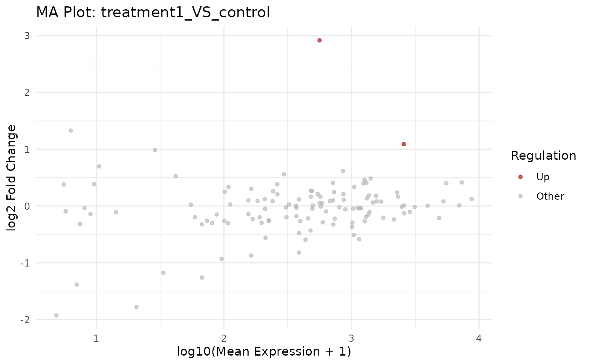

Generate MA plot from a VISTA object
Source:R/bioccheck_roxygen_fixes.R, R/viz_related.R
get_ma_plot.RdCreate an MA plot (log2 fold change vs mean expression) for a selected comparison contained in a VISTA object. Genes are coloured by their regulation class and the top results can be optionally labeled with gene IDs.
Usage
get_ma_plot(
x,
sample_comparison,
point_size = 1.2,
alpha = 0.6,
colors = c(Up = "#a40000", Down = "#16317d", Other = "gray70"),
label_n = 0,
label_size = 3,
repair_genes = FALSE,
display_id = NULL,
display_from = NULL,
display_orgdb = NULL
)Arguments
- x
A VISTA object.
- sample_comparison
Character scalar naming the comparison to plot. Must match one of
names(comparisons(x)).- point_size
Numeric point size. Default: 1.2.
- alpha
Numeric transparency (0-1). Default: 0.6.
- colors
Named character vector of colors for
"Up","Down", and"Other"genes.- label_n
Integer number of genes to label. Default: 0.
- label_size
Text size for labels. Default: 3.
- repair_genes
Logical; if
TRUE, attempt to shorten gene identifiers to symbols by stripping prefixes. Default:FALSE.- display_id
Optional ID/column name to use for labels. If supplied and present in
rowData(x), those values are used; otherwise falls back to ID mapping.- display_from
Optional source ID type for mapping (used when
display_idis not found inrowData).- display_orgdb
Optional
OrgDbused for ID mapping whendisplay_idis set but not found inrowData.
Value
A ggplot MA plot.
Examples
v <- example_vista()
p <- get_ma_plot(v, sample_comparison = names(comparisons(v))[1])
print(p)
